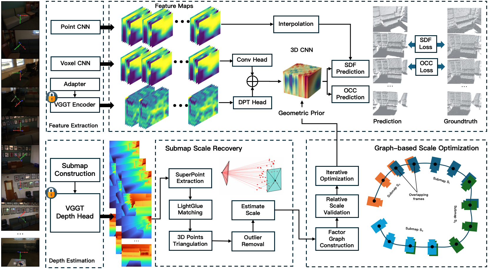
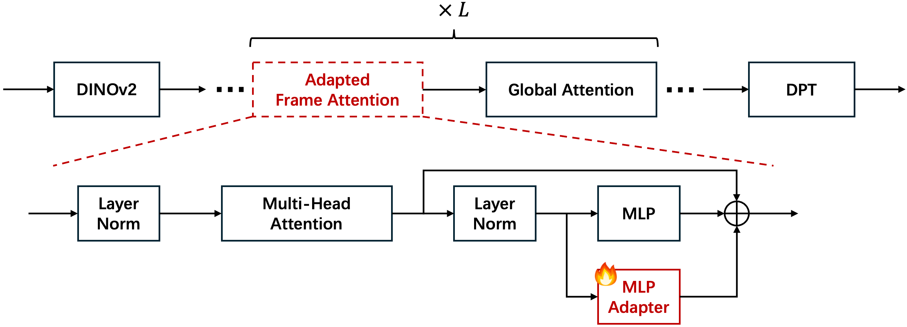
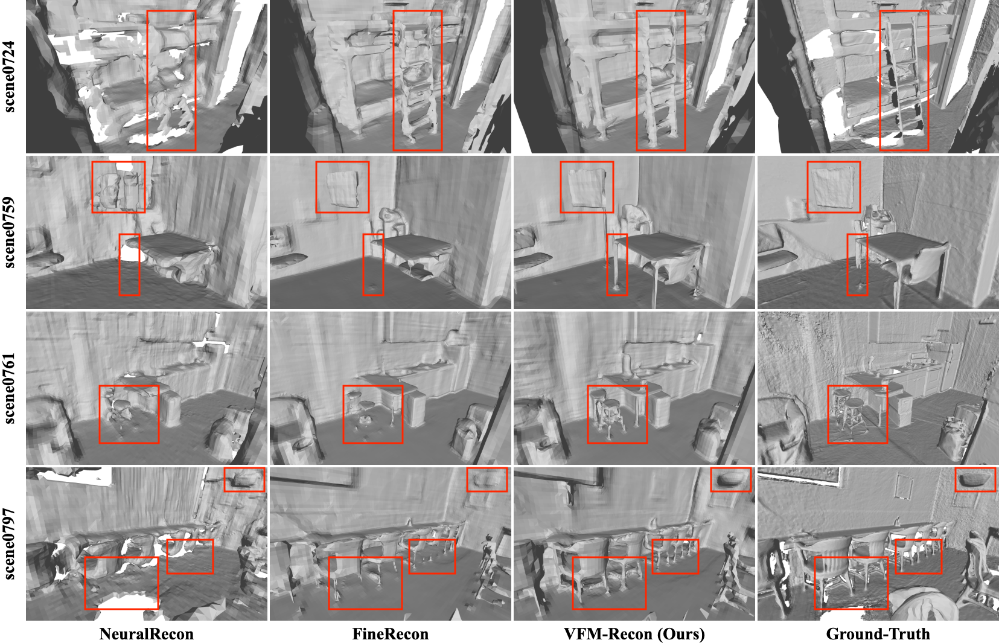
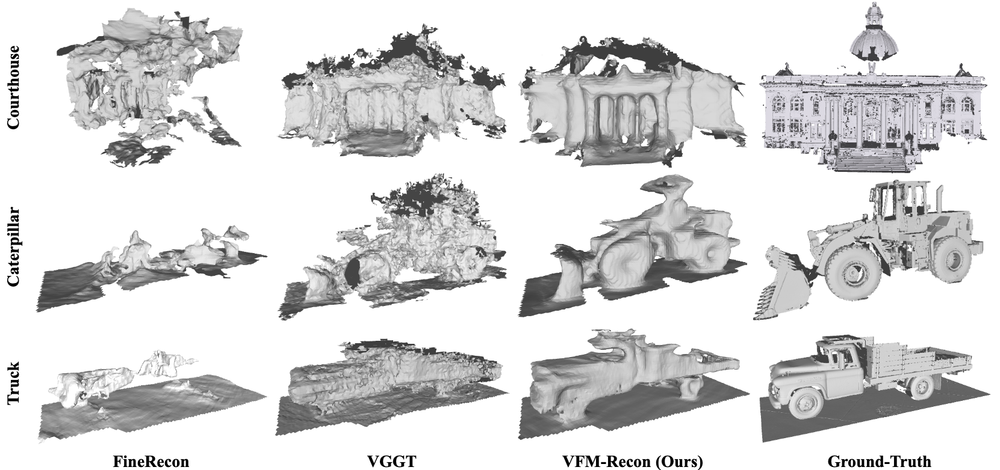

Scene-level neural volumetric reconstruction from monocular videos remains challenging, especially under severe domain shifts. Although recent advances in vision foundation models (VFMs) provide transferable generalized priors learned from large-scale data, their scale-ambiguous predictions are incompatible with the scale consistency required by volumetric fusion. To address this gap, we present VFM-Recon, the first attempt to bridge transferable VFM priors with scale-consistent requirements in scene-level neural reconstruction. Specifically, we first introduce a lightweight scale alignment stage that restores multi-view scale coherence. We then integrate pretrained VFM features into the neural volumetric reconstruction pipeline via lightweight task-specific adapters, which are trained for reconstruction while preserving the cross-domain robustness of pretrained representations. We train our model on ScanNet train split and evaluate on both in-distribution ScanNet test split and out-of-distribution TUM RGBD and Tanks and Temples datasets. The results demonstrate that our model achieves state-of-the-art performance across all dataset domains. In particular, on the challenging outdoor Tanks and Temples dataset, our model achieves an F1 score of 73.5 in reconstructed mesh evaluation, substantially outperforming the closest neural volumetric reconstruction competitor, SimpleRecon, with an F1 score of 35.7, as well as the closest VFM competitor, π3, with an F1 score of 67.0.

Our VFM-Recon framework integrates vision foundation model (VFM) priors into neural volumetric reconstruction. We first introduce a lightweight scale alignment stage that restores multiview scale coherence from the scale-ambiguous VFM predictions. We then integrate pretrained VFM features into the reconstruction pipeline via task-specific adapters, which are trained for reconstruction while preserving the cross-domain robustness of the pretrained representations.

We adapt the VGGT backbone by inserting lightweight adapter modules into its transformer blocks, enabling efficient fine-tuning for the scene reconstruction task while leveraging the rich geometric priors encoded in the pretrained model.

Qualitative and quantitative comparisons on ScanNet test split. Our method achieves superior surface reconstruction quality compared to existing approaches.

Results on the challenging outdoor Tanks and Temples dataset. Our method achieves an F1 score of 70.1, substantially outperforming VGGT (51.8), demonstrating strong cross-domain generalization.
Click and drag to rotate, scroll to zoom.
@article{ming2026vfmrecon,
title={VFM-Recon: Unlocking Cross-Domain Scene-Level Neural Reconstruction with Scale-Aligned Foundation Priors},
author={Ming, Yuhang and Xi, Tingkang and Yang, Xingrui and Yang, Lixin and Peng, Yong and Lu, Cewu and Kong, Wanzeng},
journal={arXiv preprint arXiv:2603.12657},
year={2026}
}